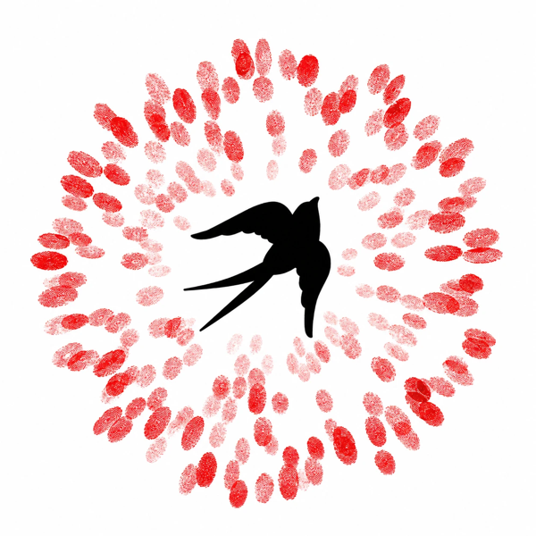

YouTube thumbnails
Four kinds of video on the Seeds of Renaissance system, shown full size and then at real size in a YouTube feed.
- Paper, white and photographs as the ground, with the one night ground kept for words alone.
- Polyamine titles of two to six words so they read at feed size; Apfel Grotezk for small labels.
- The torn edge joins photo and paper. No red in the type: the logo brings its own.
- Each thumbnail is a fixed 1280 × 720 artboard; export it at that size. Titles are samples, photos are placeholders.

Global Connection Call · October
Find your people

.thumb--gatheringOver the Mountains · Ep. 12
Attention as a moral act
Seeds of Renaissance podcast
Fig. 12
.thumb--podcastFrom the manifesto
We are the bridge between the dying past and the future unborn.
Seeds of Renaissance
.thumb--manifesto
Gardens of Change
What is trying to be born?
.thumb--talk